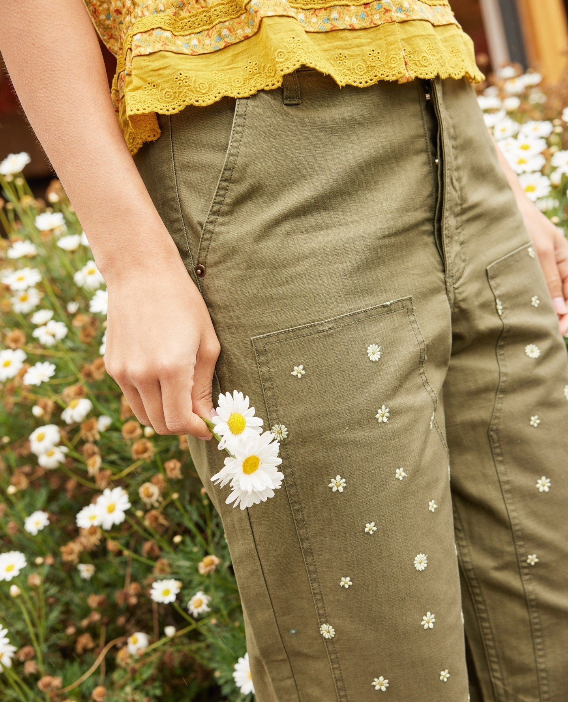
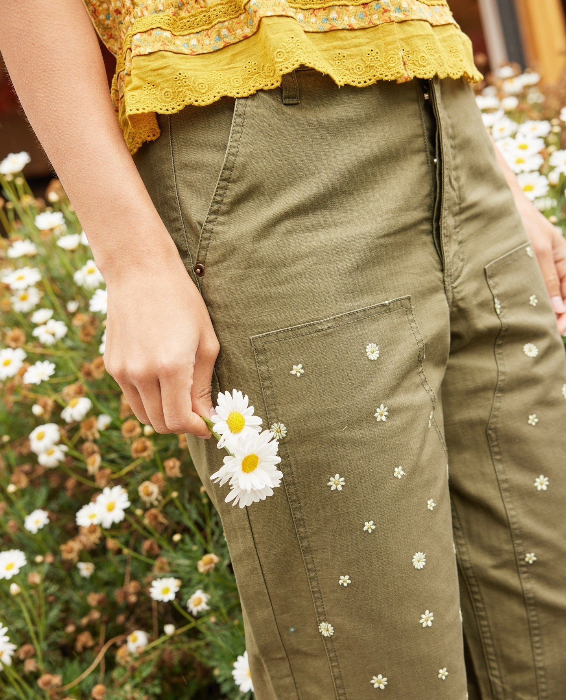

Snøhetta è uno studio di architetti del paesaggio nato ad Oslo nel 1989; l'architettura è il
fulcro di Snøhetta, spesso in combinazione con altre discipline. I loro progetti spaziano
dagli alveari ai teatri d'opera. I paesaggi connettono mondi umani e non umani; possono
confortare o confrontare, ispirare o spaventare.
I paesaggi possono essere modellati dall’accumulo di forze e tempo, possono essere
immaginati attraverso immagini, testo e narrazione. Gli architetti paesaggisti di Snøhetta
operano all'interno di questo mezzo dinamico, conducendo l'invenzione e la progettazione di
progetti da ecosistemi e parchi a padiglioni, piazze, paesaggi stradali e piani generali.
La progettazione viene portata avanti da strumenti utili alla costruzione di modellini, sia digitali
che analogici. Questa fase di sviluppo di un progetto, consente loro di diventare parte integrante
del processo di progettazione. Snøhetta ogni giorno sperimenta e ricerca modi per capire come
costruire responsabilmente edifici, spazi e prodotti per il futuro.
Il nostro lavoro considera l’interconnessione della vita umana con le
caratteristiche visibili e
invisibili della natura per rivelare possibilità non
realizzate di tutto ciò che può essere
costruito.
Nei loro studi vige la filosofia del “Il nostro lavoro non è isolato né indipendente
dal contesto”.
Per realizzare edifici che siano pullulanti di energia propria, lavorano con i principali esperti
mondiali per identificare materiali innovativi, ridefinendo l’aspetto del futuro utilizzo dei
materiali
in futuro. Sono stati studiati e analizzati materiali come plastica, argilla, legno e
diversi tipi di
calcestruzzo a basse emissioni di carbonio.
Ogni fornitore di materiali e interni doveva essere locale o fortemente legato alla sostenibilità
sociale. In collaborazione con un ecologo specializzato in sviluppo urbano e analisi del
paesaggio,
verrà piantata una selezione di vegetazione affiliata a livello locale in base al suo
valore
utilitaristico ed ecologico, per stimolare microhabitat per specie in pericolo e vulnerabili,
come
api selvatiche e farfalle.


 
